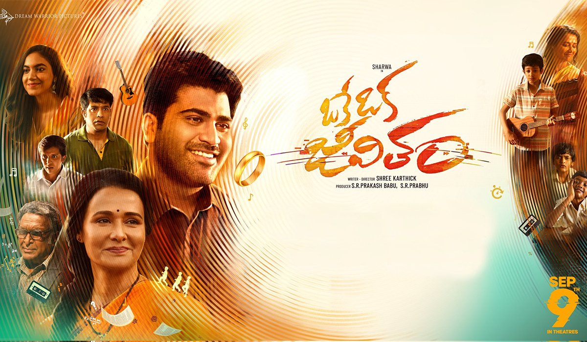

Myself Vyshnavi Kattamuri.I am very much interested in learning new things.I completed my Undergrdauation(CSE) in 2020.Afetr Completing my undergraduation I joined a company named DXC Technology.There I have been worked as Frontend Developer for 1 year.And then moved to an MNC Accenture Solutions Pt Lmtd.There I had worked for 1 year.In this one year I have worked as a PeopleSoft Developer for 4 months using Oracle Peoplesoft Tool and then moved to a Developing project which is using React Js.In this project I understood that i am lacking in some parts of coding languages so i joined masters program in Northwest Missouri State University.
I recently watched this movie.The part that made me like this movie is two scientists work on a time machine to trvael back in time.In the process one of the scientist dies while expeimenting it.Remaining scientist works on the failed part and tries to experiment it with three friends who are struggling with life.
